|
序号 |
术 语 |
定 义 |
图 例 |
|
1 |
圆锥表面 |
与轴线成一定角度，且一端相交于轴线的一条直线段（母线），围绕着该轴线旋转形成的表面 |
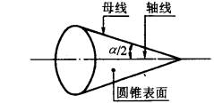 |
|
2 |
圆锥 |
圆锥表面与一定尺寸所限定的几何体 外圆锥是外部表面为圆锥表面的几何体（图a）；内圆锥为内部表面为圆锥表面的几何体（图b）。外圆锥又可称为锥轴，内圆锥又可称为锥孔 |
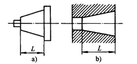 |
|
3 |
基本圆锥 |
设计给定的圆锥。可由一个基本圆锥直径（D、d或dx），基本圆锥长度（L），基本圆锥角（α）或基本锥度确定；也可由两个基本圆锥直径和基本圆锥长度（L）确定 |
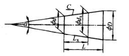 |
|
4 |
极限圆锥 |
与基本圆锥共轴且圆锥角相等，直径分别为最大极限足寸帮最小极限尺寸的两个圆锥。在垂直于圆锥轴线的任一截面上，两个圆锥的直径相等 |
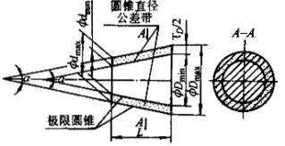 |
|
5 |
实际圆锥 |
实际存在并通过测量得到的圆锥 |
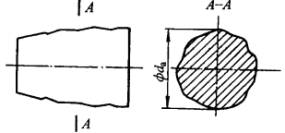 |
|
6 |
圆锥角α |
在通过圆锥轴线的截面内，两条素线间的夹角。圆锥角简称为锥角 |
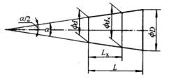 |
|
7 |
极限圆锥角 |
允许的最大或最小圆锥角 |
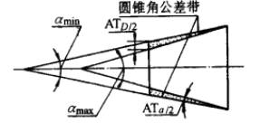 |
|
8 |
实际圆锥角 |
在实际圆锥的任一轴向截面内，包容圆锥素线且距离为最小的两对平行直线之间的夹角 |
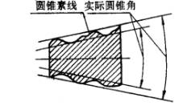 |
|
9 |
锥度（C） |
两个垂直圆锥轴线的圆截面直径差与该两截面间的轴向距离之比 |
|
|
10 |
圆锥长度（L） |
最大端圆锥直径截面与最小端圆锥截面之间的距离 |
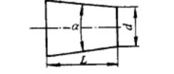 |
|
11 |
圆锥直径（d、D） |
圆锥在垂直轴线截面上的直径 最大端圆锥直径──D 最小端圆锥直径──d |
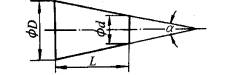 |
|
12 |
极限圆锥直径 |
垂直于极限圆锥轴线截面上的直径 |
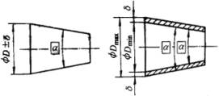 |
|
13 |
圆锥直径公差（TD） |
圆锥直径的允许变动量，它适用于圆锥的全长 |
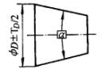 |
|
14 |
圆锥直径公差带 |
两个极限圈锥所限定的区域 |
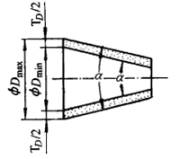 |
|
15 |
圆锥角公差（AT） |
圆锥角的允许变动量 |
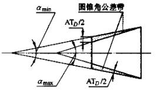 |
|
16 |
圆锥角公差带 |
两个极限圆锥角所限定的区域 |
|
|
17 |
给定截面的圆锥直径公差（TDs） |
在垂直于圆锥车由线的给定截面内，圆锥直径的允许变动量 |
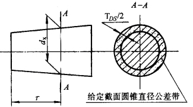 |
|
18 |
给定截面的圆锥直径公差带 |
在垂直于圆锥轴线的给定截面内，两个极限圆锥所限定的区域 |